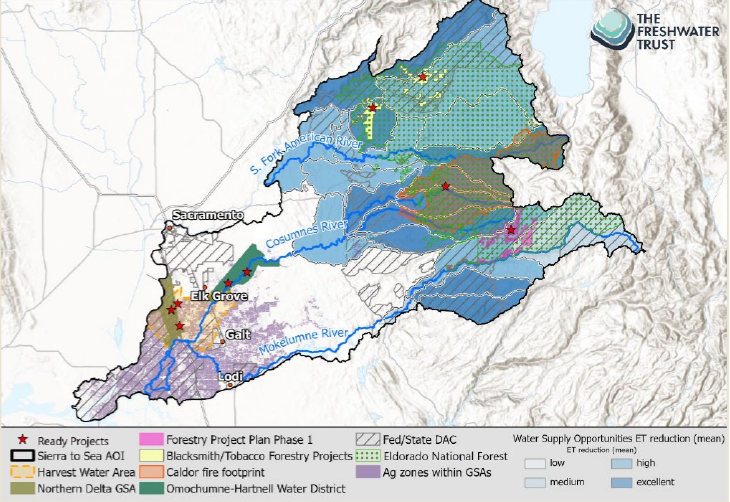

Forward#
Towards a new finance model for landscape restoration
Tim Wigington | Vance Russell | Jeff Odefey
Takeaways#
New approach/sustainable funding. Conservation finance is a relatively new approach to funding conservation projects to create more sustainable funding revenue at scale.
Public-private partnerships. One pathway to increasing funding sustainability is to leverage public funds with private investment.
Challenges. Although there are many successful examples, conservation finance has yet to scale due to innovation curves, resistance to new approaches, and bespoke solutions in each landscape where it’s applied.
Background#
It is impossible to ignore that our natural systems cannot withstand the fast-accelerating threats posed by climate change. These systems—which have long provided us clean air, clean water, flood protection, and beautiful places to recreate—need our help, and they need a lot more of it yesterday. In the face of these urgent climate-driven pressures, we must rapidly deliver natural infrastructure project dollars to protect biodiversity and thin forests, reintroduce fire as an ecosystem process, implement better water use technology on farms, and improve habitat in streams and wetlands. However, the current funding, financing, and implementation infrastructure isn’t in place to make this happen.
With a clear-eyed view of these realities, we cannot simply hope that if we try harder within the structures of our conservation system, we’ll magically get bigger, faster, and better results. Instead of accepting good projects here and there as the best we can do, we must set quantifiable targets, intentionally organize our funding, tools, and partners around delivering the projects that can best achieve those targets, and harness the power of finance and capital to catapult projects forward. Simply put, we need a system capable of adding one or two more zeros worth of project areas (and funds supporting them) in each watershed, or we’ll never catch up.
This incentive- and data-driven approach can deliver leveraged funding to the best projects with much greater speed and efficiency and provide us with something we’ve been sorely missing: a viable pathway to achieving our long-term objectives.
In this book, you’ll see exciting examples of how several innovators have taken this challenge head-on. These realist idealists have worked to fit countless square pegs into round holes. Looking forward, it’s time to build from these lessons and collectively implement the best lessons into our conservation funding system so that we graduate from pilots and one-offs into widespread progress toward resilience.
Threats#
The deepening implications of global climate change are increasingly apparent in both emerging ecological trends and increasing social and economic disruptions. The combinations of drought and extreme heat are accelerating the planet’s frequency, scale, and intensity of wildfires. Diminished by drought and shifting precipitation patterns, water supplies in many regions are increasingly challenged to meet human and ecological needs. Habitat degradation or conversion, roads built into natural areas, and illegal wildlife trade combine with climate change to threaten biodiversity.
At the same time, storm pattern fluctuations generate floods that stretch or overwhelm existing flood management infrastructure and threaten human and natural communities. Responding to these and other challenges requires local, regional, and national intervention. It also requires innovation in the funding, financing, and governance strategies that the public and private sectors must use to plan, develop, and deploy climate resilience strategies.
Nature-based solutions#
In the face of these urgent climate-driven pressures, we must rapidly deliver natural infrastructure project dollars to thin forests, implement better water use technology on farms, and improve habitat in streams and wetlands. However, the current funding, financing, and implementation infrastructure isn’t in place to make this happen.
Watershed Outcomes Bank Funding Model
Problem
The traditional, project-by-project, partner-by-partner approach to funding and implementing conservation and restoration work cannot deliver watershed-scale resilience at the pace or scale necessary to adapt to the multiple impacts of climate change. In the current system, funds are split between multiple agency programs with complex fund matching and eligibility requirements; large landscapes are broken into siloed jurisdictional implementation efforts; and local
stakeholder groups are left in the middle trying to piece together funds to implement a fraction of the needed projects. The urgency of climate change demands that we more rapidly secure, prioritize, and deploy much more funding. Doing that will require a replicable partnership and a leveraged co-funding structure.
Solution
A Watershed Outcomes Bank (WOB) framework responds to all these practical challenges. Watershed-scale resilience can be achieved by leveraging siloed funding sources, targeting those coordinated funds to high-impact projects across a watershed, simplifying and making more certain the delivery of those funds to partners, and linking together projects throughout a watershed across isolated land management units.

Framework
Quantifies regional watershed/landscape resilience targets.
Quantifies potential watershed resilience project benefits or values from a variety of project types that can generate those benefits (e.g., forest thinning, irrigation upgrades, agricultural land repurposing leading to water replenishment, carbon sequestration, and economic uplift).
Identifies the most cost-effective cross-watershed resilience solution to pursue.
Helps organize partner efforts around that optimal solution and then integrates priority project identification, planning, permitting, and coordinated pursuit of funding into an action plan.
Creates a financial hub for the watershed that consolidates matched/leveraged funding sources, improves access to larger-scale financing, and matches funds to high-priority projects.
Helps centralize mechanisms for implementation to meet desired large-scale restoration efforts.
Tracks/manages all projects, reimbursement, accounting, and reporting in a centralized database.
Landscape funding
A centralized and aggregated approach helps open the door for securing more funders to co-fund projects they might not otherwise consider and supports formal cross-partner fund matching. Consolidating funding into a central hub creates more conservation finance opportunities, which helps smooth out funding gaps, creates cash at the right times for landowners, suppliers, and partners, and allows projects to be deployed quicker without timing, cashflow, or operational uncertainties.
Despite their importance, projects intended to protect our communities and ecosystems are routinely and significantly underfunded until the inevitable disasters occur. As a result, taxpayers are often left to shoulder the relatively increased costs of reactive actions to respond to crises. Similarly, traditional approaches to community infrastructure, e.g., water supply systems, flood and stormwater management, and natural resource management, often need to be more suited to providing resilience in a changing climate. An alternative and more cost-effective approach favors up-front investments in actions that use natural processes to increase ecosystem and community resilience to climate change impacts.
Status quo#
With an honest view of these realities, we cannot simply hope that if we try harder within our conservation system, we’ll magically get bigger, faster, better results. Instead of accepting good projects here and there as the best we can do, we must set quantifiable targets, intentionally organize our funding, tools, and partners around delivering the projects that can best achieve those targets, and harness the power of finance and capitalism to catapult us forward. Simply put, we need a system capable of adding more money to projects in each watershed.
Scale#
During the past decade, there has been unprecedented federal and state investment in forest health and restoration projects. Despite the compelling need and benefits, private investment has yet to match public investments. Scaling conservation finance is also impeded by bespoke, often hyper-local funding that is difficult to replicate at larger scales. The newness of the funding mechanism may be at play here. Still, the needed collaboration to create a conservation finance mechanism takes time to build trust and broach skepticism during implementation. Getting beyond business as usual, especially with risk-averse local organizations, is critical to increasing uptake curves and broadly scaling conservation finance. Multiple examples can further aid scaling acceleration, and private investors can gain confidence in their value with clear, measurable outcomes.
Nature-based solutions may be one key way to scale investment in biodiversity conservation and climate change mitigation solutions. Still, the scale and time mismatch between bespoke finance solutions and the need for rapid climate change mitigation or ecosystem restoration is a major challenge facing conservation practitioners.
Solutions#
An incentive- and data-driven approach can deliver leveraged funding to the best projects with much greater speed and simplicity and provide us with something we’ve been sorely missing: a viable pathway to achieving our long-hoped-for objectives. In this book, you’ll see exciting examples of how several innovators have taken this challenge head-on. These realist idealists have worked to fit countless square pegs into round holes. Looking forward, it’s time to build from these lessons and collectively implement the best lessons into our conservation funding system so that we graduate from pilots and one-offs into widespread resilience.
The following are suggested solutions for the private sector, government, communities, and non-profits:
Private Sector#
Develop a marketplace to connect private investors, payors, and project implementers.
Encourage other private sector investors and payors to contribute to conservation finance projects, particularly where there’s a connection between investment and avoided costs. For example, a water purveyor becomes a payor for projects reducing wildfire risk in a watershed with hydropower facilities.
Develop viable marketplaces for resources other than carbon, such as water, biodiversity, air quality, and other valued public resources.
Government#
Examine and implement ways to reduce the red tape associated with permitting and compliance, especially for white-hat restoration projects incorporating conservation finance.
Fund projects that consider and budget for scale and replication across larger landscapes.
Collaborate with private sector and non-profits to identify and eliminate perverse incentives that hinder conservation efforts.
Communities & Non-profits#
Connect with organizations and communities implementing conservation finance mechanisms to understand the benefits, challenges, and lessons learned.
For organizations developing conservation finance mechanisms, create clear and honest lessons learned communications guidance for non-profits, government, and the private sector. Work to make connections between projects and funders.
Look for ways to create a rising tide that floats all boats, where many nonprofits compete for the same funds. Would creating a larger funding pot fund all organizations rather than create competition that costs time and capacity? Are there complementary skills that can be identified and shared?
Measure project outcomes. Register what works in the conservation evidence database.
Create an outcomes bank (example from Cosumnes).
Next steps#
The future of conservation finance centers around fostering collaboration between governments, private sectors, and non-profits to streamline funding for large-scale, replicable restoration projects. Decreasing the connection time between investors and project proponents is critical to the long-term success of leveraging public and private funds. Creating automated landscape measurement systems that accurately measure project outcomes will increase trust in new finance and create a larger marketplace for investment and implementation. Conservation cannot leave its adolescent phase without considering connections, scale, and replication. Innovative financing models should support vital conservation efforts and offer promise for sustainable investment for contributions to the planet’s health and resilience.
1. Introduction#
Welcome to the Conservation Finance e-Book. Several articles in this book and the underlying pilot project were originally supported by a California Department of Water Resources, Integrated Regional Water Management, and Disadvantaged Community Involvement Technical Assistance grant to the Yuba Water Agency. The resources created under that grant provided a foundation for additional collaboration between the authors of this e-book and for further developing conservation finance strategies in project areas across Northern California. Please see the initial report, Because It’s Worth It, and case studies for an additional complement to this book.
To build on this effort, we updated and edited several original articles and added new chapters with additional collaborators from The Freshwater Trust, Blue Forest, and the National Forest Foundation. We hope to add new chapters, cases, and success stories as conservation evolves.
1.1. Conservation Finance#
Whether in the form of grants or capital budget allocations, public agency funding often fluctuates dramatically with political and financial currents. This long-term unpredictability often motivates businesses, nonprofits, and agencies to seek sustainable funding models and approaches to leverage public and private investments in natural resource conservation and infrastructure.
Conservation finance offers an emerging approach to securing long-term, predictable finance for landscape-scale conservation and forest health projects. Conservation finance also fosters effective collaboration between private and public sectors, creating stakeholders and investors from the pool of project beneficiaries. This innovative strategy achieves multiple goals:
Channels capital into conservation projects that offer overlapping triple-bottom-line (ecological, social, and financial) outcomes.
Attracts private investment by quantifying ecosystem services to create a value proposition for beneficiaries, who will pay for these benefits.
Utilizes partnerships to strengthen the financial foundation for watershed restoration, reforestation, and post-fire recovery.
Reduces the burden on public budgets and stabilizes irregular funding sources.
Increases the pace and scale at which these initiatives are completed.
Enables the long-term protection of forests and related natural resources, ensuring their invaluable benefits persist for future generations.
1.2. Why this book?#
Conservation finance strategies and case studies are well described across the professional and academic press. However, in many cases, this information is either tailored to an audience with previous finance expertise or is captured in disparate articles and websites that do not provide a single point of reference. This web-accessible book is intended to serve as a concise yet comprehensive introduction to conservation finance. It is particularly intended for an audience of land managers, public agencies, nonprofits, and other individuals without specific expertise in project finance.
Whereas other publications and the focus of impact finance focus on social investment and infrastructure, this book focuses on examples and cases of natural resource management, forest health, water infrastructure, and watershed restoration.
1.3. Chapters#
After the Forward, the book contains the following chapters:
1. Introduction. Introduction to the book.
2. Primer. Introduces conservation finance and provides examples and cases.
3. Fire. How conservation finance applies to fire and forest health.
4. NFF. Placeholder for NFF Chapter
5. Water. Examples and cases from water and stormwater management.
6. Roadmap. A roadmap for moving conservation to scale.
7. Barriers. The barriers to conservation finance, in particular, getting beyond their novelty.
1.4. Acknowledgements#
The authors offer particular thanks to Jonas Epstein (USFS), JoAnna Lessard (Yuba Water Agency,) Todd Sloat (Hat Creek Lumber), Sharmie Stevenson (Fall River & Pit Resource Conservation Districts ), Michelle Wolfgang (USFS), Madison Kirshner (USFS), and Regine Miller (Headwaters Environmental, Inc.) for their input, feedback, and ideas.
2. Primer#
Understanding New Models for Accessing Private Investment
2.1. Background#
With the passage of the Infrastructure Investment and Jobs Act (better known as the Bipartisan Infrastructure Law) in 2021 and the additional resources provided by the Inflation Reduction Act of 2022, there has been much attention on federal funding for the nation’s infrastructure. Water systems, including investments to improve drinking water health and security, wastewater and stormwater systems, and natural infrastructure, stand to benefit from this infusion of money. However, underneath this apparent largesse lurks a different truth – over 85% of all investments in our communities’ water infrastructure come from local sources - people like you and me paying our taxes and water bills to our local water utilities. Chronically underfunded, these utilities can benefit not just from infusions of public funds from Washington, DC, and state capitals but from smart, innovative financing strategies that leverage private investments to help public funding work harder.
A parallel news cycle highlighted the increasing appeal of environmental impact bonds and similar outcomes-based approaches to financing reduction in wildfire threats. In California, Blue Forest Conservation and the Yuba Water Agency launched a second Forest Resilience Bond in 2021, delivering 25 million (USD) to forest and watershed health projects in the Northern Sierra. Quantified ventures launched a private land forestry initiative known as the Wildfire Mitigation Environmental Impact Fund, a revolving loan fund to reduce wildfire risk in Southwest Colorado.
What makes these approaches compelling? How do they work, and what benefits can they provide? This document hopes to clear up some of the mystery around these and other conservation financing strategies by:
Clearly describing collaborative project finance.
Unpacking the roles played by participants in these strategies and the structures that deliver private investment to projects.
Providing examples and lessons learned from existing finance collaborations.
2.2. Why Conservation Finance?#
Impact investment, outcomes-based finance packages, private-public partnerships, and other strategies to access private capital are, in some ways, variations on time-tested models, such as revolving loan funds, for accessing the capital needed to fund community projects and infrastructure. Many water utilities have traditionally issued bonds to borrow money to finance sewer systems, water treatment facilities, and other hard infrastructure. Debt-financing these investments has many advantages, including immediate access to the full amount of money needed for projects, reduced upfront costs compared to paying cash for projects, and inter-generational equity linking debt repayment to payors who benefit from its services across the project’s lifespan. In addition, debt financing may reduce the short-term financial impact on water ratepayers.
For example, the WaterNow Alliance points out that if a utility with a 70 million (USD) annual budget were considering investing 10 million (USD) in a major GSI incentive program, the utility would have to raise rates by 14% to pay for the program out of its annual operating budget. If, instead, the utility debt-financed the program and paid for it over 20 years, less than a 1% rate increase would be needed to implement the same $10 million program.[1]
2.3. Benefits#
Although not widely used, the benefits of leveraging public funds with private are many:
Matches investment-ready capital with on-the-ground restoration projects that yield environmental and social returns.
Accelerates the pace and scale at which restoration and green infrastructure are funded and scaled. Many of the previous examples noted are infrastructure—and water-focused. However, integrating nature-based solutions through the restoration of riparian, forested, farmland, and other habitats is critical to these efforts. Conservation finance can yield these dual benefits by raising funds upfront and decreasing the time for project completion from decades to 2-3 years.
Stabilizes otherwise irregular funding from public sources, allowing work to move forward more rapidly and predictably, significantly aiding cash-poor non-profits and municipalities in starting and completing projects. Grant and public loan programs typically reimburse utilities for incurred project costs. Private finance can reduce the financial challenges this creates for water utilities and their partners.
Builds local capacity and greatly eases the contracting burden across project proponents.
Can be structured to re-distribute the risk for project design and success away from the payor and toward the implementer (e.g., via a pay-for-performance approach).
Unlike traditional debt financing, non-traditional strategies to access private investment offer some advantages, particularly for smaller and mid-sized water agencies. First, many strategies can transfer risk from the water agency and public to private investors and investment facilitators. What do we mean by this? Initially, approaches such as the partnerships developed by Corvias (now Corvias Infrastructure Partners) placed the responsibility for financing and delivering infrastructure projects on the private sector. Sometimes referred to as private-public partnerships or Design-Build-Finance-Operate-Transfer project delivery, this approach can reduce burdens on water agency staff and open finance opportunities when agencies lack the expertise and capacity to engage private investors directly.
Risk can also be transferred by linking repayment rates to the success of the project; in essence, a water agency is committing to pay for the benefits of a project rather than for the project itself. An interesting example is Bailey’s Trail System Environmental Impact Bond, which delivers a mountain biking trail network to a rural community in Ohio.[2] Repayment of this investment isn’t linked to the completion of the trails but to the expected increase in community economic activity in the local community. This economic uplift was the purpose of the project and financing.
Another benefit can come from using private investment to leverage multiple funding sources, creating a portfolio of funds that can repay the initial investment. The North Yuba Forest Resilience Bond is an excellent example of a debt-financed structure that combines private and public funds to accelerate and scale up watershed health projects. Up front, private investment comes from insurance companies and foundations and avoided cost payments from Yuba Water agency as the payor.
Finally, private investment strategies may be accessible for green and natural infrastructure projects with limited access to federal and state funding and financing programs, such as State Revolving Loan Funds. Impact investment bonds have successfully delivered green stormwater infrastructure projects in Atlanta, the District of Columbia; the North Yuba, Forest Resilience Bond, is leveraging multiple investments to deliver forest restoration work across tens of thousands of acres in a fire-threatened California watershed.

2.4. Private Investment in Action#
There isn’t a one-size-fits-all approach to developing a locally relevant private finance strategy, but some key elements appear in many of the pioneering examples in this field. At a most basic level, private finance of water infrastructure requires relationships between stakeholders or beneficiaries who can participate in the planning and initiation of projects. These beneficiaries may also be project investors; however, investors may be an entirely separate set of entities.
Carbon & Ecosystem Service Markets
Carbon markets have become a major investment for climate change mitigation, helping fund many reforestation and forest conservation projects. Not without their critics or failures, investing and implementing carbon projects can be complicated to develop, implement, and track. Other new markets quantifying biodiversity and water are nascent but offer similar investment promises to protect natural resources and mitigate climate change.
AWE Protocol. Spatial Informatics Group and Element Markets developed a forecast methodology under the Climate Forward program to recognize the climate benefits associated with fuel treatment activities that lower the risk of catastrophic forest fires and their emissions. Known as the Avoided Wildfire Emissions Forecast Methodology, the Climate Action Reserve protocol could provide complementary funding for thinning and prescribed fire projects to grants and private investments. The Protocol differs from carbon offsets in that forecasted mitigation units (FMUs) are issued for forecasted greenhouse gas reductions or removals. FMUs are used to mitigate anticipated future emissions, such as wildfires.
Markets. Market prices for carbon credits vary depending on a given project’s size and location, treatment type, and the carbon market or registry used. Carbon credits can be realized for projects of any size and located on federal, state, and private lands. See the Avoided Wildfire Emissions Protocol section as another approach that is easier to implement than carbon sequestration credits or markets since the avoided costs are already calculated, and proponents do not have to seek an entity to purchase the credits.
Embodied Carbon. Although it may be several years from implementation, developing and marketing low-carbon building materials is another new opportunity. Buildings are a major source of greenhouse gas emissions, so building decarbonization is a California state priority. Embodied carbon is the lifecycle of greenhouse gas emissions from creating, transporting, and disposing of building materials (Carbon Leadership Forum, 2022). In other words, embodied carbon is any building’s carbon footprint contained in its building materials. It differs from operational carbon, produced by a building’s energy, heat, and lighting. The California Air Resources Board is developing a comprehensive strategy for embodied carbon and is seeking comments following the signing of ABs 2446 and 43 (CARB, 2024). More details on embodied carbon can be found in this slide deck from a recent California Air Resources Board workshop on September 19, 2024.
Ultimately, the central role is played by the agency or agencies who are the primary payors for the project. These agency payors are responsible for repaying all debt, including any interest on borrowed money. Payors may be able to draw upon rate or tax revenues and other sources of income to repay the investors. In the water sector, payors may be motivated by the need to comply with regulations or other legal mandates, the obsolescence of outdated infrastructure, or the need to respond to emerging conditions or threats. For community groups or other non-agency proponents of a project, establishing a partnership with a payor is instrumental to the success of most financed projects.
Let’s take these roles in turn.
Collaboratives. Often, successfully planned, financed, and implemented projects succeed because they are informed and supported by a collaboration of affected beneficiaries or stakeholders. These individuals and organizations can ground a project in the surrounding community’s needs, contribute expertise and perspectives that inform project design and implementation, and contribute social capital that leads to political support for the project. This support can translate into opened opportunities for funding, investment, and other forms of support.
Investors. Federal or state agencies may contribute partial funding for a project or provide various financing support such as credit guarantees, credit enhancement or loss reserves, or technical assistance. Investors can come from many sectors. For instance, insurance companies, retirement funds, university endowments, and institutional investors may offer below-market interest rates if a project meets its environmental or social benefit goals. Individual impact investors, acting alone or through composite funds, may be willing to provide capital at reduced rates of return to environmentally or socially beneficial projects. Finally, philanthropic foundations may be available to invest in projects that fulfill their programmatic interests. One benefit of private finance strategies is the potential to blend multiple investment sources into one project portfolio, perhaps even sequencing these sources of financing to discrete phases of a project.
Payors. Ultimately, projects must be paid for, and investors repaid for the financing they provide. This repayment obligation will often fall on a public water agency or other governmental body with an operational or ownership interest in the proposed project. Agencies with a regulatory or other driver that compels their interest in the benefits of a project will be the most ‘secure’ payors. However, other forces may motivate agencies, institutions, and even businesses to pay for (or contribute toward) the outcomes associated with a successful project. Corporations with sustainability, resilience, or environmental justice commitments are equally driven to invest in projects that provide beneficial outcomes. Economic development agencies and entities may have funding to contribute to projects that meet local job creation or business engagement goals.
Combining all these actors into a financing package keyed to a natural infrastructure project may be less straightforward than the pathway to traditional bond issuance and is certainly more complicated than simple cash pay-go approaches to capital improvements. Where simpler approaches to investing in infrastructure are available, it’s likely best for an agency to pursue those avenues. However, private finance can unstick projects long deferred in waiting for traditional finance opportunities or capital improvement budgets to provide enough cash. Private finance can also deliver projects that are larger in scale and have beneficial outcomes than can be supported with annual grants or budget cycles. It can be useful to look at the financing structures adopted by existing private investment models to understand better the interplay between investors, payors, and beneficiaries.
In 2017, Quantified Ventures and the District of Columbia’s Department of Water and Sewer (DC Water) launched the nation’s first environmental impact bond focused on implementing green infrastructure to reduce sewage overflows and flooding [Martin and Applebaum, 2021]. This outcomes-based investment package tied the rate investors earned to achieving specified environmental performance goals. The investment package structure linked DC Water to private bond buyers. The structure used by Quantified Ventures, DC Water, and their investors follows the track illustrated below. The role of the third-party evaluator is noteworthy in this outcomes-based repayment scheme. Five years after launching the project, the evaluator confirmed that stormwater runoff had been reduced by nearly 20%, a level that met the bond’s base-level repayment criteria.[3]

Blue Forest’s Forest Resilience Bond adopts a somewhat different approach. The Bond, more of a revolving loan instrument, is not strictly an outcomes-based financing strategy. The project payor, Yuba Water Agency, makes payments to investors unrelated to achieving any of the project’s many benefits. The structure adopted by Blue Forest enables the creation of a portfolio of investors and funders who repay and complement the Agency’s funding.

In the above diagram, the investors (Calvert Impact Capital, AAA Insurance, and others) provide up-front capital by paying into the Forest Resilience Bond. This aggregate fund, administered by the National Forest Foundation, pays contractors and local NGOs to plan and deliver forest and watershed restoration activities. Once completed, Yuba Water Agency (the beneficiary) repays implementation costs to the fund, which repays the investors.
2.5. Additional Cases#
In addition to the three examples mentioned above, other experiences with innovative private financing showcase the flexibility and appeal of these strategies.
Corvias
Corvias, a leading developer of private-public partnerships, built on its success in Prince George’s County, Maryland, with the launch of the Fresh Coast Protection Program with the Milwaukee Metropolitan Sewerage District. Through this program, the partnership secured $75 million in financing, providing resources enabling Corvias to design and construct green infrastructure projects to help MMSD meet its regulatory goals. The outcomes-based partnership commits the District to pay a fixed cost per gallon to Corvias, with the ultimate target of installing 8.45 million gallons of stormwater retention capacity.
These examples show the possibilities and benefits of creative strategies that bring private capital to support water infrastructure projects [Odefey and Russell, 2020]. Nevertheless, there are exceptions to the normal pathways water agencies and municipal governments take to finance such projects. There are some challenges to securing private finance that have stymied broader acceptance of this approach – and more effort is needed to understand and reduce the impact of these obstacles. Institutions like the Conservation Finance Network are commendable resources for cultivating knowledge about financing, highlighting best practices, and sharing notable experiences with a wide audience.
EIFDs
Several municipalities in California pioneered Enhanced Infrastructure Financing Districts to leverage the value of infrastructure improvements as collateral for obtaining the resources to implement these projects.[4] Using tax increment financing, this approach allows water agencies and municipal governments to issue bond debt for projects that future increases in property tax revenue will repay.
This is not to say that pursuing these approaches to private finance is challenge-free. Some of the costs and challenges will be familiar to public utilities and experience with bond preparation and issuance for capital projects. Considering outcomes-based finance or similar approaches adds some new issues: lack of familiarity and capacity, uncertainty about how to measure outcomes best, and lack of established networks between utilities and investors, to name but a few. The authors of this paper discuss significant impediments and pathways to reduce them in a separate issue brief.
Endnotes
3. Fire#
Tinderbox to Treatment: Leveraging forest restoration funds

3.1. Caldor#
In April 2015, I drove up Highway 50 along the American River Canyon to the Horsetail Falls trailhead to climb Pyramid Peak. There were still patches of snow on the ground, and the water coming down the falls was gushing, making for scenic views up the narrow canyon. While still hiking up through the mixed conifer stands on the trail, I noticed how dense the forest was with small-diameter trees. I left the trailhead briefly, walked through the pines and firs, and was struck by the understory’s excessive accumulation of downed wood. It was scary and surprisingly dry at this point in the spring. These conditions were due to a century of fire suppression, which created a high chance of burning soon, severely altering the picturesque canyon. A similar pattern exists in nearly every forested system of the Sierra Nevada mountains.

Photo: National Park Service
Reducing these harmful conditions will require forest health and restoration solutions that integrate communities, infrastructure, ecological thinning, and responsible biomass utilization, which are critical to reducing the negative impacts that unhealthy forested systems pose. Addressing unnatural conditions due to past forest and fire management regimes is a massive undertaking, already garnering billions of dollars from state and federal resources and countless organizational resources. However, getting to the scale needed is challenging due to localized environmental conditions, organizational capacity, environmental compliance, and funding.[1]

Figure 1. Situation model of fire’s impact on forested ecosystems and potential interventions to reduce impacts.
3.2. Theory of change#
Together with partners and a literature review, we created a simplified situation model connecting uncharacteristic fire results from fire suppression on public and private lands exacerbated by climate change (Figure 1) [Margoluis and Salafsky, 1998]. To enable solutions that effectively address these challenges, we then linked interventions, interim results, and outcomes (Figure 2). The treatments identified in the results chain focus on local-level interventions such as thinning, biomass utilization, and prescribed fire.[2] Although based on widely agreed upon forest restoration interventions, the models explicitly show the links between wildfire, forest health, and beneficial outcomes.

Figure 2. Results chain linking interventions with interim results and outcome objectives.
3.3. Solutions#
Walking the talk and progressing from models to solutions is a significant hurdle, especially at the landscape scale. Proposed solutions to reduce the negative impacts of wildfires generally fall into three buckets: funding, scaling, and capacity, although each local situation is nuanced and contains different approaches.
3.4. Funding#
Substantial state and federal funds are available for forest health projects. California is investing in forest health, betting that increased funding for thinning, prescribed fire, wood processing infrastructure, and business development projects will reduce wildfires. This increase in funding, capacity, and resources is part of an all-hands-on-deck approach to address forest health throughout California. However, public funds cannot cover all project needs. Furthermore, engaging the private sector is critical to meeting the challenge. How can public dollars be maximized to reduce wildfire risk while restoring forested stands after a fire?
The Yuba Forest Resilience bond
…will help us finance prevention strategies to stave off the ever-present risk of catastrophic wildfire that can damage national forests and neighboring lands.” Eli Ilano, Tahoe National Forest Supervisor
A potential funding solution is to leverage and complement public funds with private capital, increasing the number of projects that return an investment to investors once meeting predetermined outcomes. Two examples of innovative finance approaches include
The $25 million Yuba II Forest Resilience Bond on the Tahoe National Forest to restore 48,000 acres.
The Southwest Wildfire Impact Fund takes a similar revolving loan fund approach to foster regional restoration across public and private land in the San Juan National Forest. The fund is capitalized by bond proceeds, grants, and appropriations, disbursing loans to landowners annually to pay for forest health treatments.
Blended, nontraditional funding strategies such as these have three distinct advantages over traditional grants and loans: They shift risk from project implementers or agencies to investors, provide funding faster by providing capital to implementers at project start rather than reimbursement-driven grants, and create new funding sources where funding may be scarce or not enough to address the problem at hand.
One critical barrier to developing non-traditional finance is the lack of payors or entities that repay initial restoration investments, ideally with a modest return. For example, the Yuba Water Agency pays investors in the Yuba II Forest Resilience Bond when predetermined outcomes related to watershed forest health and sedimentation reduction projects are reached following project implementation and validation. Please see the collaborative finance white paper Because It’s Worth It for a full description of payors and impact bonds.
3.5. Scale#
Following the Caldor Fire that burned large proportions of the American River Canyon, CAL FIRE awarded the El Dorado Resource Conservation District (RCD) funding as part of a coordinated and centralized Emergency Forest Restoration Team to prioritize post-fire restoration projects. A similar effort is underway following the Dixie Fire on the Plumas and Lassen National Forests, which is helping to create cost and time efficiencies over large landscapes.
Other strategies for scaling efforts may include outreach to support stakeholder understanding of the broader forest system, go beyond localized thinking, and consider how to replicate pilots through local solutions and policy-based regional solutions (Salafsky et al., 2021). At a vast scale, the Forest Service’s ‘Confronting the Wildfire Crisis Plan’ aims to treat up to 20 million acres of National Forest Lands and 30 million acres on other federal, Tribal, State, and private lands with partners (USFS, 2022). By increasing the scale of this work, other factors such as ecological function, biodiversity, ecosystem services, climate adaptation, socio-cultural equity, and human well-being factors are more relevant (Schuster et al.,2022).
3.6. Capacity#
Building a workforce that can ably plan integrated projects, develop creative financing solutions, implement the needed array of forest treatments, utilize the removed biomass, safely apply prescribed fire, and measure the outcomes is part of a fire and finance effort. Increasing local capacity is critical for scaling efforts to restore forests following fire and build more resilient rural communities. Capacity building is impossible without community-based qualified personnel and a sustainable, ecologically sound forest health economy.
Huge strides are being made through coordination at the state and local levels. CAL FIRE’s Wood Products and Bioenergy Program has an open request for proposals to fund wood products businesses and build capacity. We can solve multi-disciplinary challenges to implementing forest restoration, energy, safety, and equity by combining best practices and methods from various disciplines. Healthier and more resilient forest ecosystems will result from identifying the relationships between the issues and barriers to increased pace and scale and offering integrated approaches. Testing and refining pilot efforts will be essential to the learning process and ensuring we meet social and ecological goals.
Training a workforce to work in the woods is a critical current and future need. Many community colleges are creating programs to address this for work as variable as forestry to truck driving. For example, Lake Tahoe Community College started a forestry program teaming with the California Conservation Corps and local agencies. Shasta College has an associate’s degree in science in forest science and technology.
California Conservation Corps
“The CCC’s partnership with education institutions is extraordinarily beneficial and one we aim to replicate across the state. It’s a huge benefit to our Corps members, who get exposure to college and degree programs that can help them launch well-paying and meaningful careers in forestry and other fields. Together, we’re helping develop a highly-trained workforce.” California Conservation Corps Director, Bruce Saito
3.7. Parting Thoughts#
Capacity, scale, and funding will not be the only items needed to change California and the West’s wildfire situation. Policy change, community health, increased private sector engagement, and more diversified equity and cultural approaches are needed to surmount this life-threatening situation. Volatile forest conditions will not change overnight, but perhaps future disasters can be avoided by considering how existing and new approaches to mitigate adverse conditions can be exponentially ramped up and coordinated throughout the Western United States.

Endnotes
4. NFF Cases#
New ways to fund restoration on National Forests.
Carina Bracer, National Forest Foundation
4.1. Takeaways#
5. Water#
New Approaches to Delivering Sustainable Water Infrastructure
5.1. Executive Summary#
California’s disadvantaged communities (DACs) face financial and staff capacity challenges as they work to maintain their aging water infrastructure and related systems. These challenges are pitted against an increasing need for environmentally resilient infrastructure to meet the demands of rising populations and uncertainty due to climate change. Unmet system needs include outdated drinking water treatment facilities, incorrectly sized and leaking distribution pipes, low-quality groundwater sources, crumbling wastewater collection systems, failing wastewater treatment plants, stormwater management systems that fail to meet current weather and regulatory conditions, and localized flood mitigation hazards. Concurrently, decades of fire suppression have left many northern California regions and their vital water-supplying watersheds at risk of catastrophic wildfire damage.
The public water sector has long relied on support from federal and state loan programs to fund new capital projects or upgrades to existing infrastructure. Despite recent state bond measures and funding contributions from the federal government, water infrastructure funding in California is perennially insufficient. Accessing new capital is needed to jump-start local projects. Alternative finance approaches that draw on private sector financing, such as environmental impact bonds, community-based public-private partnerships, and enhanced infrastructure financing districts, may provide California communities with additional opportunities to diversify municipal funding portfolios for these vital projects, expanding upon or leveraging the loans and grants that water agencies typically rely upon for capital projects.
For a more in-depth look at the ideas and resources cited in this chapter, see Chapter 2 and [Odefey and Russell, 2020].
5.2. Challenges#
Economically disadvantaged communities in Northern California and their water utilities face various water infrastructure challenges. These challenges are increasingly exacerbated by climate change and economic/demographic pressures.
5.2.1. Drinking Water#
While the paramount concern for many DAC water system operators is their aging drinking water infrastructure, other communities rely on groundwater sources with high arsenic, nitrates, or other contaminants. Small ratepayer populations and perceived legal obstacles to rate or tax exacerbate these challenges, making it difficult to raise sufficient revenue to fund the replacement or rehabilitation of failing systems through traditional budgetary approaches.
5.2.2. Wastewater Treatment#
Wastewater systems in DACs experience collection system breakages and disrepair that result in raw sewage leaks and high maintenance costs. Outdated treatment systems may be inadequately sized to meet contemporary demands and incapable of meeting current regulatory requirements. Wet weather infiltration into collection systems increases treatment costs and leads to overflow events. As with drinking water systems, wastewater operators are hamstrung by funding challenges, with inadequate rate revenue and traditional government grant/loan opportunities insufficient to meet all needs.
5.2.3. Stormwater Management#
Stormwater management improvements are often lower-priority projects for DACs due to the need to focus on more critical needs associated with drinking water and wastewater compliance. Many urbanized areas struggle to fund and implement stormwater management programs that meet permitting requirements for municipal separate storm sewer systems and reflect green infrastructure best practices. Despite the high social, economic, and environmental benefits of implementing green stormwater management, the capacity and financing for projects of this type are often lacking. Even when funding is available from state and federal sources, competition for grants can be fierce.
5.2.4. Watershed Health and Fire#
Water agencies are increasingly concerned about the health of headwaters forests. Catastrophic wildfires and their follow-on impacts can seriously threaten the security of these source waters, risks that can be mitigated through forest thinning and restoration projects. Post-disaster projects often result in considerable avoided costs while delivering additional benefits. See Chapter 4 for more details.
5.3. Non-traditional Financing#
Recognizing that public funding will never be sufficient to meet water infrastructure investment demand, there is a growing interest in engaging the comparatively greater resources within the private sector. Private investors, particularly impact investors or investors committed to funding projects with social and environmental benefits, collectively have access to more capital than government agencies. Private financing may be a pathway to overcome funding limitations and implement community and watershed enhancement projects at a large scale. This paper examines methods for attracting and utilizing private sector investments in public water infrastructure.
5.4. Environmental Impact Bonds#
Environmental impact bonds are a cost-share model specifically tailored to attract private investors motivated by their investments’ social and environmental effects. Whereas the primary goal of an environmental impact bond may be to achieve specific environmentally beneficial outcomes, the investment may also create additional social, economic, or environmental opportunities that benefit the participating community. The performance payout may be tied to achieving local business development, employment, or poverty reduction goals.
Green Infrastructure Bond
The City of Atlanta’s Department of Watershed Management worked with Quantified Ventures to develop a publicly offered environmental impact bond in January 2019. The first of its kind, the bond secured $14 million for regional-scale green infrastructure projects intended to reduce stormwater-related flooding in the city’s economically disadvantaged Proctor Creek neighborhood. The bond’s ten-year term and base interest rate of approximately 3.6% will allow the City to make a significant upfront investment in projects that are calculated to deliver millions in environmental and economic benefits derived from reduced flooding and increased water quality.
Baileys Trail System
The Baileys Trail System is a proposed 88-mile premier mountain biking trail system in Athens County, Ohio, in the Wayne National Forest. Through increased visitation, the trail system is proposed to revitalize one of Ohio’s poorest and most underserved counties. The private investment provides the upfront cost of building trails, with repayment tied to achieving economic development outcomes, such as increased sales tax and transient guest taxes.
5.5. Public-Private Partnerships#
In addition to environmental impact bonds, other methods for attracting private capital may be suitable for SRFA DACs. A community-based public-private partnership is a particularly interesting stormwater management and stream restoration model. Community-based public-private partnerships modify the well-established public-private partnerships model by tying payment to the achievement of environmental and social outcomes that benefit the community and increase stakeholder engagement in project delivery Adaptation Clearinghouse, 2020).
City of Salinas
In 2019, the City of Salinas took Initial steps to set up a thirty-year Design-Build-Finance-Operate community-based public-private partnership. This program is intended to implement and maintain green stormwater infrastructure to meet stormwater permit requirements. Metrics for performance include quantitative environmental and social metrics that will serve as the performance measures for the Partnership. The City planned an initial investment of $50 million depending on establishing a stormwater utility or a cohesive, low-cost, and responsible financing approach.
Prince George’s County
In March 2015, Prince George’s County, Maryland, created the Clean Water Partnership, a community-based public-private partnership to retrofit up to 4,000 acres of impervious surfaces using green infrastructure features. The partnership provides up to 40% of the County’s compliance costs upfront, enabling projects to begin sooner and removing much of the reimbursement challenges typically encountered with public funding. It also greatly reduces the County’s administration and procurement costs by up to 80%. The agreement requires small and minority-powered businesses to be contracted for up to 40% of the total project, creating a projected 5,000 jobs.
5.6. EIFDs#
Enhanced Infrastructure Financing Districts (EIFDs) are a recent evolution of the tax increment financing tools previously developed in California. They support financing infrastructure projects with anticipated increased property tax revenues associated with the future benefits of the projects Lefcoe, 2014. Revenues from Enhanced Infrastructure Financing Districts can be used for public works, transportation, parks, libraries, and water and sewer facilities—emphasizing sustainable community goals under California’s landmark climate legislation Flint, 2018. Recent revisions to the Enhanced Infrastructure Financing District law reduced some of the challenges to adoption; for example, no public vote is required to establish a District. With this new flexibility, developing an Enhanced Infrastructure Financing District may be useful for funding regional projects that benefit multiple agencies or jurisdictions CSDA, 2019. Indeed, revenues gathered through an Enhanced Infrastructure Financing District may be one option for repaying the investment to secure an environmental impact bond.
City of West Sacramento EIFD
In 2017, West Sacramento became one of the first California cities to take advantage of the new Enhanced Infrastructure Financing District law. The City’s Enhanced Infrastructure Financing district covers approximately one-quarter of the area of West Sacramento. It is expected to generate revenues of $1.1 billion for parks and recreational spaces, sewage and stormwater infrastructure improvements, and other projects that foster community revitalization and sustainability.
5.7. Lessons to practice#
Adopting a suitable approach for a specific set of projects will be critical to developing a new environmental impact bond or other suitable financing approach. Ideally, the process of determining an appropriate financing approach begins early, with an effort to fully articulate the relationship between the water-related challenge faced by the utility and the outcomes the utility seeks to attain. An initial feasibility study can be tailored to identify the full benefits and beneficiaries associated with a water infrastructure project. Collaboration is a key ingredient in building a successful financing package − water system investments should not be considered stand-alone projects undertaken solely by a water agency but as partnerships between the agency, members of the community, and an appropriate portfolio of investors.
A partnership approach is essential to assembling a portfolio of diverse funding and financing sources. Agency and non-profit partners may be eligible for state, federal, and philanthropic grants. Partners with sufficient financial resources may be able to carry up-front costs while waiting for government reimbursement grants. Private beneficiaries may be able to provide debt financing with favorable repayment terms. A portfolio approach also allows water agencies to identify appropriate revenue streams for each investment provider. For example, water rates may be used to repay state-provided loans while improved instream flows or reduced flood risk may have monetary value for private sector investors.
In general, we suggest that project developers follow an iterative process infused with collaboration and partnership that consists of the following steps:
Develop system understanding
Apply options to finance decision tree
Create a project prioritization process
Develop a feasibility study
Secure investment from diverse sources
Implement projects
Measure outcomes and analyze results
Communicate and share results
Iterate (return to step 1)
5.8. Hypotheticals#
Considering these broad concepts, the case studies suggest several examples of non-traditional financing for actual project needs. Water resource agencies and their communities will benefit from considering private investment approaches to complement public funding sources or compensate for unavailable public funds. Table 1 summarizes these examples.
Table 1: Summary of hypothetical and real-world examples for non-traditional financing. For the Groundwater Recharge Initiative, see Sustainable Conservation.
Applications |
Funding |
Challenges |
Examples |
|---|---|---|---|
Multi-benefit green infrastructure |
Grants, loans |
Grant capacity, lack of municipality connections |
Atlanta EIB, Buffalo |
Source water fire reduction |
Grants, loans, insurance |
Scale, partnerships, new |
Denver Water, Santa Fe, Rio Grande Water Fund |
Drinking water system upgrades |
Grants, loans, avoided cost |
Grant capacity, new |
Prince George’s County |
Wastewater system upgrades |
Grants, loans, avoided cost |
Grant capacity, new |
City Anderson, EIBs |
Irrigation water re-use |
Water sales |
Business case |
EIBs |
Groundwater recharge |
Grants, loans |
Funding, Scale |
Groundwater recharge initiative |
Water system consolidation |
Grants, loans, private |
Grant capacity, compliance, NIMBY |
Prince George’s County, EIBs |
5.9. Recommendations#
What might municipalities, DAC water systems, and others do to move a project or program forward and overcome key obstacles or challenges? We offer the following recommendations:
Create regional scaling opportunities. Collate watershed-wide programs for regional funding and projects and avoid creating bespoke environmental impact bonds for every city or jurisdiction.
Facilitate multiple community water system consolidation. Consolidation does not necessarily need to apply to an entire water system. It could be for joint water treatment chemical purchases to reduce costs and share technical knowledge, capacity, and economies of scale to implement prioritized projects.
Diversify funding sources. Create opportunities, capacity, and finance for small communities to easily develop new funding sources beyond loans and grants while strengthening their ability to secure the latter.
Establish self-sustaining funding sources. As environmental impact bonds are created and successful, build a sustainable funding portfolio that takes advantage of multiple private and public funding sources and grants vs. revenue generation. Self-sustained funding could also be based on the community foundation model.
Develop regional innovation centers for new capacity, tech, and funding. Regional centers could include training, funding access, new water infrastructure, and restoration technologies. An innovation center could also attract people to work in DAC communities.
Create a clear and defensible case for investment. Quantified Venture’s work building the case for bonds and revolving loan funds is instructive here. In each project, they made the case to investors and implementers for the appropriate finance tools and completed the due diligence to analyze the investment risk.
Increase collaboration, transparency, and information to maximize replication and mitigate risks. Collaboration creates stronger programs across multiple partners and increases scale and transparency. Tell your neighboring towns and counties how you are solving these problems!
Standardize metrics for measurement. Catalogs to help standardize sustainable development goal metrics are becoming more accessible and easier to use. IRIS+ is the generally accepted system for managing, measuring, and optimizing impact for impact investors.
Link capital investments with projects. Conservation finance experts have commented that funding is not the problem delaying investment in environmental projects, but instead, there are billions of unallocated investment resources undeployed due to a lack of projects [Hamrick, 2016].
Establish alternative finance as a value-driver instead of a value-added tool. For example, as the market for assets such as carbon credits continue to gain traction and grow, forest land managers interested in non- timber forest revenue still view alternative finance sources as a value-add rather than a value driver [Billorn, 2020].
6. Barriers#
Navigating real and perceived impediments to conservation finance

Photo: Rich Walkling
6.1. Background#
The pathway to adopting an outcomes-based financing solution promises many natural infrastructure projects, but it is paved with many barriers, obstacles, and challenges. Understanding these and discerning between the challenges that can be addressed, obstacles that can be reduced, and barriers that need to be avoided can be critically important for the local proponents of any project.
While there is considerable enthusiasm for scaling the application of collaborative finance[1] across the water sector, there has not been commensurate movement to apply these strategies to actual projects. Despite the pioneering work of key non-traditional finance champions (e.g., Quantified Ventures, Blue Forest, and Corvias), the application has mostly been limited to several high-profile pilot or demonstration projects, often supported by philanthropic foundations. As interest in these innovative finance strategies expands, water agencies, land managers, and others interested in accessing new finance mechanisms can benefit from frank reflection on the factors that have frustrated widespread adoption.
Northeast California is renowned for its natural beauty and recreational opportunities, from high mountains to world-class streams and lakes. Many towns are sparsely populated and economically disadvantaged. They face an acute lack of capacity and limited access to funding to address natural resource challenges faced by fire, restoration, and associated infrastructure.
A California-wide study on forest restoration and wood utilization found barriers to private financial investment include heightened risk for investors given unpredictable supplies, increasing costs, lack of markets for low-value biomass, and lack of local infrastructure and capacity [Elkind et al., 2022]. When identifying their biggest obstacles in preparing for and responding to wildfires, 38% of respondents cited barriers related to inadequate funding to cover base program operations, administrative time, and costs [Davis et al., 2020].
Additional barriers to forest restoration, rural development, and infrastructure include
Decreased private investment in local business and economic development. With limited local economic capacity, local businesses and community organizations are constrained in attracting and managing investment in natural-resource-related enterprises. Without addressing the gap in sustainable and stable funding for local community organizations, the disparity in state and federal funding allocations to vulnerable communities will continue to grow.
Across the nation, private investment in water and forest infrastructure and restoration barriers include securing project payors, understanding and allocating acceptable risk, and quantifying and measuring outcomes [Odefey and Russell, 2020].
Episodic, short grant funding periods and fragmented funding for projects undermine the organizational momentum of plans and projects, organizational capacity, and the ability to develop innovations and achieve impact at scale. Private landowner assistance is underfunded, but it is becoming increasingly important. These properties make up the heart of the wildland-urban interface, particularly in rural areas such as NE California, and are at significant risk of catastrophic wildfire (Tompkins, personal communication, 2022).
In our conversations with financing experts and project developers who have opted to pursue collaborative finance approaches, we’ve come to recognize three types of challenges that have an outsized effect on successfully securing financing:
1. Securing Payors. Infrastructure investments, including nature-based approaches, typically need a public agency to be the primary responsible payor. Spending by these agencies is most effectively motivated by the need to meet a regulatory or other mandate. Even then, statutory or regulatory restrictions may limit the types of infrastructure in which an agency may invest.
2. Risk. There is low institutional tolerance for risk in the collaborative finance arena, meaning that resolving real or perceived risk can be a significant challenge to adopting unfamiliar technologies or finance mechanisms. Supporters of a project need to consider each stakeholder’s tolerance for risk and design both the project and financing in ways that satisfactorily address those risk perceptions. For example, a stormwater management agency may be reluctant to invest in a comprehensive green infrastructure program because it isn’t sure that the associated projects will meet its regulatory obligations, and the private-public partnership being suggested to implement the program is an unfamiliar approach to contracting. A pay-for-performance structure that ties repayment to achieving specified water quality goals or the volume of stormwater treated may be a step toward overcoming the agency’s resistance.
3. Measuring Outcomes. When the structure of a financing arrangement is focused on delivering a project’s outcomes, it becomes crucially important to identify and measure these outcomes in ways that speak to the concerns of the payor agency. Outcome measurement and outcome communication must be responsive to agency input and concerns rather than pulled from a standard template. Metrics accepted across the collaborative stakeholder group can help align interests and investments.
While described here as separate issues, they are closely intertwined. Resolving one may require the project’s proponents and stakeholders to consider and address all three. For example, a water supply or flood control district may be the ideal payor for a restoration project. However, convincing its board and staff to allocate funds may require reducing the risk they perceive in the project, the financing strategy, or both. This risk perception may be due to uncertainty about delivering benefits that align with the district’s mission or long-term strategies. Identifying ways to quantify the benefits that the district cares about may be a pathway to gaining its support.
In addition to these core concerns, challenges often arise, many of which are not unique to collaborative financing strategies. Opting to pursue collaborative finance doesn’t erase any of these challenges, so project stakeholders are advised to consider them when designing both the project and the financing strategy.
6.2. Funding#
Repayment revenue. Perennially a limitation on water infrastructure projects, collaborative finance strategies also depend on identifiable, sustainable revenue streams that can be allocated to repayment of debt obligations. The expectation is that at least some investment repayment will come from the sponsoring/payor agency; an advantage of collaborative finance approaches is that multiple repayment streams may be assembled.
Limitations. State or federal grant or loan programs can be important components of a portfolio of repayment funds. However, these programs often have restrictions that limit their applicability, such as barring interest repayment on private investments.
6.3. Sociopolitical Challenges#
Lack of familiarity. Collaborative finance strategies involve outcomes-based or non-traditional financing structures frequently unfamiliar to typical project proponents and developers.
Capacity. The capacity of organizations involved to create, manage, and fundraise is uneven across municipal and water sectors. Public agency finance staff may be reluctant to adopt these approaches or lack a fundamental understanding.
Natural Infrastructure as Add-on. For many public agencies, nature-based alternatives and green infrastructure are considered add-ons and funded through pay-as-you-go (paygo) strategies based on annual operating budgets. This limitation is reinforced by governing boards and accounting systems that have difficulty accommodating revenues other than traditional grants, loans, and water sales.
— Debt. Many public agencies are unwilling to incur debt for natural infrastructure projects. The widespread preference for cash-basis funding, general or reserve funds, and federal and state grants and loans limits the appetite for financing strategies.
Trust. Successfully developing and deploying an outcomes-based financing method requires collaboration between a range of stakeholders. Without a positive history between these entities and individuals, progress may be frustrated by a lack of comfort, trust, and familiarity.
6.4. Finance#
Avoided Cost. Difficulties quantifying avoided infrastructure and maintenance costs lead to an unwillingness or impossibility of using this basis for project approval and financing.
Predevelopment Costs. The cost of feasibility studies and pre-transaction development may be high relative to other infrastructure projects. It can be a high bar for many communities and organizations to raise planning/feasibility funds to start the process.
Finance networks. There are few established networks for connecting financiers to municipalities and water agencies. Investors are unaware of emerging project needs and opportunities, and water project developers are disconnected from relevant investment sources.
6.5. Getting Beyond No#
While this roster of potential impediments may seem daunting, most can be reduced through a well-conceived and managed collaborative strategy. It may be helpful to focus on a trio of core themes running through many of the looming challenges:
Identify beneficiaries/potential revenue streams. Accessing private capital will require a solid business case underpinned by identifiable, reliable revenue sources to provide an attractive risk-adjusted return to investors. It may be important to convert some project beneficiaries from freeloaders to payors. In most cases, an entity (or entities) with a strong regulatory or economic driver will likely be the key payor for the project, bearing ultimate responsibility for the repayment of investors.
Create consistent, agreed-upon metrics. Universally accepted metrics may not be suitable for every individual project. Some, like the Volumetric Water Benefit Accounting method developed by the World Resources Institute, may be useful, but often, the metrics for evaluating success must be identified by the project partners and should be responsive to the risks and values that payors and investors bring with them. In addition, metrics should reflect the regulatory, economic, environmental, or economic forces that drive the project.
Value broad-based political and community support. Building a coalition of support across the political and societal landscape is key to implementing collaboratively financed projects. This support can translate into widespread buy-in and multi-faceted financing.
6.6. Resolving Challenges#
With this short catalog of potential resolutions in hand, let’s explore how these themes come into play across the various stages of the project’s timeline and examine how to resolve challenges in real-time. These challenges can be overcome with careful planning, deep stakeholder engagement, and creativity.
Conceptual Stage. It can be valuable to identify potential financing strategies even at the earliest stages in the development of an eventual project when the initial stakeholders have identified a problem needing a solution but haven’t yet clarified what that solution may be. However, at this point, few stakeholders will likely have a working grasp of outcomes-based approaches that may be relevant. Some foundation-laying education may be important, including introductory-level presentations by outside experts. This level of engagement can help socialize available concepts within the stakeholder group and build relationships with potential partners and finance providers.
Design. As the project advances to a preliminary design stage, discussions amongst the stakeholders should turn to identifying the intended outcomes of the project, including co-benefits. These outcomes can be linked to the mission or values of one or more stakeholders and may be the basis for financial investment in the project. At the same time, it can be helpful to agree upon metrics that indicate successful realization of the desired outcomes and evaluation strategies that can provide an acceptable measurement of the outcomes and benefits.
Role Assignment. With project design and desired outcomes/benefits in hand, a stakeholder group may turn to identifying likely payors and investors in the project, noting the difference in these roles. Payors are entities that agree to contribute funding without expectation of repayment, e.g., a water utility or special district with a regulatory obligation linked to a project outcome. Investors, on the other hand, may be motivated by one or more of the project’s benefits to provide funding but with an expectation of repayment. This repayment may or may not include some interest in addition to the capital provided.
Implementation. A credible, neutral third party may be hired as a project administrator/implementation manager as the project is implemented. Engaging a third party can not only relieve the payor(s) of daily implementation burdens but may be able to provide or locate financing for the project. For example, some public-private partnerships are built around project developers undertaking implementation tasks and delivering project finance.[2] Bringing in a trusted implementation partner can reduce some of the risks otherwise carried by the public utilities leading the project by providing cost-effective, expert project management.
Evaluation & Communication. Finally, as the project begins to deliver benefits, reach agreed-upon milestones, or is completed, a trusted evaluator can ascertain whether metrics are being met and outcomes-based payments are appropriate. Credible evaluation reduces risks for the payor and investors and provides information to help communicate the project’s value to all stakeholders.
6.7. Concluding Thoughts#
As the cliché goes, the flip side of challenges is opportunities. Collaborative finance approaches can deliver various administrative, economic, and environmental benefits to communities, public agencies, and watersheds. These benefits include the ability to implement projects more quickly and at landscape scale, cost-effective implementation of nature-based infrastructure, and delivery of outcomes rather than payment for project completion. While the challenges described above may seem unsurmountable, the very process of collaboration that lies at the heart of these non-traditional financing strategies may hold the keys to success.
This chapter focuses on the challenges and obstacles project stakeholders may encounter within their localized pathway from concept to project delivery. At the same time, the broader project finance community has work to do to acknowledge the existing barriers that have frustrated the wider embrace of outcomes-based private investment in water infrastructure. Several publications have explored this subject and are worth reviewing for those interested in advancing local projects [Elkind et al., 2021], [Strategies, 2021]. Experience tells us that bringing innovations to fruition often takes multiple avenues of action. The compelling pressures of accelerating the need for investment in resilient communities and water systems, coupled with stretched public budgets, make the case for resolving challenges to ‘innovative’ financing.
Endnotes
7. Roadmap#
Solutions for Leveraging Private Investment to Support Forest Health and Watershed Restoration.
7.1. Takeaways#
Key takeaways include the following:
Blend public and private. A blend of public and private funding is needed to accomplish the projects identified in the region at the scale and pace that best responds to emerging risks and opportunities.
Identifying payors willing to invest in projects based on the value of avoided costs continues to challenge conservation finance development. — Experience. Tried-and-true experience with wood products operations and finance is critical to success in forest management and wood utilization infrastructure operations.
Carbon & ecosystem services. Creating opportunities to complement state and federal funding sources with revenue from payments for the benefits of restoration, forest health management, or mitigation projects, such as the Avoided Wildfire Emissions Protocol, could greatly increase the scale and impact of restoration projects in the region.
Centralized administration entity. A centralized entity could be critical in managing public grants, contracts, environmental compliance, and private funds. Several of the Office of Planning and Research-funded Feedstock Aggregation pilots in Northern California are developing joint powers authorities to consolidate feedstock from forest health projects to increase utilization and use of forest products.
7.2. Background#
This Roadmap is intended to provide solutions to the many challenges facing conservation finance. Its development started with the Burney-Hat Creek Collaborative (see pulldown).
Burney-Hat Creek Collaborative
In recent decades, local northeast California communities have experienced high rates of unemployment and increased risks of high-severity wildfires, issues the Collaborative actively works to mitigate. The Burney Hat Creek Community Forest and Watershed Group (BHC), founded in 2009, is a collaborative forestry effort dedicated to improving social, environmental, and economic conditions in the Burney Creek and Hat Creek watersheds. The Collaborative footprint encompasses 364,250 acres of public, private, and Tribal lands and the communities of Burney, Johnson Park, Hat Creek, Cassel, and Old Station.
The group’s vision is to create a fire-resilient forest ecosystem with sustainable populations of wildlife, fisheries, and habitat, functioning and restored watersheds and water quality, protected cultural resources, and appropriate recreational opportunities while also helping to support quality of life, jobs for diverse community members, and economic benefits in local communities. Post-fire recovery following large wildfires, such as the 2021 Dixie Fire, shows the challenges of protecting forests, water supplies, and communities and the need for increased investment to reduce fire risk and create healthier, more resilient forests and watersheds.
The Fall River Resource Conservation District, working with grant funding from the Office of Planning and Research (OPR), is initiating a Pilot Project known as the California Forest Residual Aggregation and Market Enhancement (CalFRAME) Pilot Project to aggregate feedstock so that existing and emerging businesses can secure long-term contracts for forest wood products. Numerous small and industrial businesses are working to sustainably manage California forests in this geography’s Wildland Urban Interface (WUI) and wildlands. A main goal (and challenge) of the project is developing and sustainably funding a joint powers authority to manage feedstock aggregation in the region.
The region faces similar challenges faced by other rural forested regions in California: difficulty in sustainable funding, workforce availability and capacity, and transportation. Workforce development and transportation are beyond the scope of this publication, although some funding could help with each of these two challenges. Let’s shift to funding categories possible for similar communities.
7.3. Funding#
Funding is a partial solution to several barriers to implementing forest restoration projects. However, rather than focusing on individual funding sources and types, developing strong financial mechanisms that collate a portfolio of funding for any project, program, or landscape may be a higher priority. We have organized this section to be brief and organized to focuse on non-traditional and less well-established. More traditional funding sources can be found in the dropdown below. The Roadmap is not meant to be a definitive funding guide source; we describe funding and investment resources, including the grant roster developed by project proponents, that may be considered, along with descriptions of non-tradition funding sources.
7.3.1. Collaborative Finance#
Blended financing strategies that assemble a diverse portfolio of funds from public grants and add private resources can be key to creating a locally appropriate and collaborative finance portfolio. Many of these are covered in Chapter 2. We believe these strategies may support forest and watershed restoration projects undertaken by BHC and economic or community development efforts that can support those restoration projects.
Collaborative finance is a conservation finance strategy that involves cooperative interaction between individual project developers, stakeholders, and finance providers. This process may or may not include traditional financial institutions (collaborativefinance.org). We broaden the term to include finance developed by fair and equitable participation of stakeholders in a region, landscape, or watershed to address natural resource and infrastructure management needs, utilizing multiple forms of funding from public grants to private investment. Finance approaches may include outcomes-based finance models such as environmental impact bonds. For a deeper discussion of collaborative finance approaches to financing water infrastructure in California, see [Odefey and Russell, 2020].
Traditional Funding Sources
Grants
State and federal agency grants have been the bulwark of funding in California, especially with forest health projects. Although grant funding cycles up and down with state budget surpluses and deficits, over reliance on grants can be problematic for many organizations. Nearly all agency grants are reimbursable; e.g., you must spend the funds and request reimbursement. This places an undue burden on small organizations that do not have a line of credit or ample surplus in their bank accounts.
Loans
Public, private, and nonprofit entities often use loans to cover the initial costs of projects, payroll, or material costs when awaiting reimbursement from state and federal grants or investing in or augmenting a business. The pluses of loans are availability, rapid deployment, and low interest rates. The minuses are debt servicing, the ability to pay back when returns are low, do not exist or are not possible for certain projects, and inaccessibility for entities without an established track record. Loan programs that can be subsidized and managed by public agencies (e.g., GoBiz) have a role in easing access to capital for equipment and infrastructure purchases. A zero- to low-interest loan program could be instrumental in delivering forestry and wood products utilization machinery to forested communities.
Corporate
Corporate contributions to environmental sustainability are increasing in response to the United Nations Sustainable Development Goals, increased corporate responsibility focus, and links to dependence on natural resources. Funding from corporations can often be a long haul, is heavily dependent on connections within corporate sustainability offices or executive suite officers, and may not be similar in size to grants to foundations and public funding sources. However, corporations often offer additional resources in addition to funding. Patagonia, for instance, offers modest grants of approximately $30,000 but also gives access to their communications and media departments to grantees. Corporations are highly interested in payments for ecosystem services and quantifiable outcomes. The parametric insurance example mentioned below is where corporate entities have been involved in funding restoration projects that also protect business assets and may offer avoided cost savings or a return on investment.
Philanthropic
Philanthropic foundations can play key roles in developing conservation finance strategies for forest and watershed restoration by providing grants or other investments in the projects or organizations that undertake them. Foundations can operate at regional and national levels; there is considerable interest in supporting projects that increase climate resilience, boost workforce and economic development, and sustain rural communities across these sectors. Foundation support may come in grants to cover operating expenses and project development activities. Some foundations also provide investments, known as Program Related Investments (PRIs) or Mission Related Investments (MRIs), for which they generally expect a below-market rate or nominal interest return.
Taxes/fees
Taxes, measures, and fees can effectively raise consistent revenue over longer periods. In 2020, for example, Marin County approved Measure C to fund wildfire prevention and preparedness efforts. The resulting 10-year parcel tax levies $0.10/building ft2, providing nearly $20 mn/yr to prevent and mitigate wildfires in Marin County managed through the Marin Wildfire Prevention Authority Joint Powers Agreement. Raising taxes can be challenging for rural communities without a strong commercial and private housing real estate market. California law requires voter approval of new or increased taxes. However, when tied to re-investment in the community, tax proponents may succeed in making a case for a temporary assessment.
7.3.2. Payments for Ecosystem Services#
State and federal grants for conservation, wildfire mitigation, and restoration are indirect payments from the public for ecosystem services and biodiversity conservation. In any given region, however, the public’s willingness to pay for additional benefits may often be voluntary, e.g., a GoFundMe campaign or a specialized nonprofit that funds and works to protect a local trail system, a charismatic local species, or a historical monument. However, more organized campaigns may be structured or codified into local or regional policies based on voluntary contributions (e.g., dollar check-off programs). These are often successful in areas that have tourism without entrance fees. One example is the National Forest Foundation’s Ski Conservation and Forest Stewardship Fund. Funds come from voluntary guest contributions at ski areas or lodges operating on National Forest System Lands. They must go to restoration projects in the forest where the ski area is located. An opt-out approach works best in these scenarios, e.g., a contributor must uncheck a box to indicate they do not want to contribute.
Larger watershed contribution programs throughout the West combine public and private funds to protect water resources and fund restoration or fire mitigation projects. Typically, these funds are more successful when close to larger urban areas, such as the Salt River Project and the Northern Arizona Forest Fund. A similar approach could be taken in the Burney-Hat Creek through a regional fund that adds $1 to room nights in all hotels, Airbnb rentals, and outdoor recreation businesses. Another approach would be to connect hunters and anglers who regularly visit the region and are interested in restoring forest, riparian, and other associated habitats.
7.3.3. Environmental Impact Bonds#
One outcome of a collaborative finance strategy may be the development of an environmental impact bond. In 2017, Quantified Ventures and the District of Columbia’s Department of Water and Sewer (DC Water) launched the nation’s first environmental impact bond focused on implementing green infrastructure to reduce sewage overflows and flooding (Martin and Appelbaum, 2021). This outcomes-based investment package tied the rate investors earned to achieving specified environmental performance goals. The investment package structure linked DC Water to private bond buyers. The structure used by Quantified Ventures, DC Water, and their investors follows the track illustrated below. The role of the third-party evaluator is noteworthy in this outcomes-based repayment scheme. Five years after launching the project, the evaluator confirmed that stormwater runoff had been reduced by nearly 20%, a level that met the Bond’s base-level repayment criteria (Lindsay et al., 2021).
Blue Forest Conservation’s Forest Resilience Bond adopts a different approach. The Bond, more of a revolving loan instrument, is not, strictly speaking, an outcomes-based financing strategy. The payor for the project, Yuba Water Agency, makes payments to investors that are not linked to achieving any of the project’s many benefits. The structure adopted by Blue Forest enables the creation of a portfolio of investors and funders who repay and complement the agency’s funding.
7.3.4. EIFDs#
Enhanced Infrastructure Financing Districts (EIFDs) are a recent evolution of the tax increment financing tools previously developed in California and support financing infrastructure projects with anticipated increased property tax revenues associated with the future benefits of the projects (Lefcoe, 2014). Revenues from Enhanced Infrastructure Financing Districts can be used for public works, transportation, parks, libraries, and water and sewer facilities, emphasizing sustainable community goals under California’s landmark climate legislation (Flint, 2018). Recent revisions to the Enhanced Infrastructure Financing District law reduced some of the challenges to adoption; for example, no public vote is required to establish a District. In 2017, the City of West Sacramento created a new Enhanced Infrastructure Financing District, which is expected to raise $1.1 billion for parks, stormwater, sewage, and other infrastructure improvements. While a more appropriate vehicle for cities and urban populations due to the housing density, it is possible that broad landscape-scape districts could be adapted to more rural areas.
7.3.5. Revolving Loan Funds#
Pooled funding sources such as impact bonds or revolving loan funds can help end the project->project funding cycle with greater funding available and at larger scales. Typically offered at lower than market interest rates, revolving loan funds are self-replenishing pools of money utilizing principal and interest payments on existing loans to issue new loans. They have been used effectively on small to large scale to develop businesses, assist healthcare, and improve environmental outcomes. They are flexible, can be used with more conventional funds such as grants and loans, and have been used for decades in developing and developed countries.
For example, through a coalition of public and private partners, the Wildfire Mitigation Environmental Impact Fund intends to utilize resources from private investors and revenues from biomass generated from forest thinning to offset the financial burden for wildfire mitigation in the San Juan National Forest wildland-urban interface. The project fosters regional collaboration through shared project financing and implementation. It also creates the opportunity for scaling up forest treatments and fire reduction by creating a revolving loan fund that reinvests proceeds into additional projects, ensuring that capital is available for long-term re-treatment and expansion of forest health interventions.
Because of its revolving loan nature, the impact of the fund will continue to grow over time as capital is redeployed for forest health treatments in new areas beyond this initial plan. The Environmental Impact Fund will deploy financing for an initial proposed plan to reduce wildfire risk over 64,871 acres in Southwest Colorado, encompassing private, federal, state, local, and tribal lands. An analysis of three representative parcels within the larger proposed geography demonstrated a benefit-cost ratio of nearly 300% based on avoided risk and damage to properties, infrastructure, and water resources if a wildfire were to occur. In addition, an estimated 287,708 green tons of biomass would be made available through the treatments, which can be converted to electricity or other commercial uses if biomass plants can be built to consume the woody by-products of forest restoration projects.
7.3.6. Avoided Wildfire Emissions#
Spatial Informatics Group and Element Markets are developing a forecast methodology under the Climate Forward program to recognize the climate benefits associated with fuel treatment activities that lower the risk of catastrophic forest fires and their emissions—known as the Avoided Wildfire Emissions Forecast Methodology, the final product is expected by June 2022 and could provide complementary funding for thinning and prescribed fire projects to grants and private investments. The Protocol differs from carbon offsets in that forecasted mitigation units (FMUs) are issued for forecasted greenhouse gas reductions or removals. FMUs are used to mitigate anticipated future emissions, such as wildfires. FMU credits were created today to address future impacts and equal one metric ton of CO2e. Thomas Buccholz of the Spatial Informatics Group gave the committee an overview of the Protocol on May 17, 2022.
7.3.7. Carbon Markets#
Carbon markets offer an opportunity to secure gap or stack funding for on-the-ground forest management activities, such as thinning, pruning, mastication, mechanical treatment, and even prescribed burning. Revenue realized through the carbon market could help the JPA to treat more forest land than otherwise possible and generate additional biomass that could be put under supply contracts to support existing and emerging infrastructure. Market prices for carbon credits vary depending on a given project’s size and location, treatment type, and the carbon market or registry used. Carbon credits can be realized for projects of any size and located on federal, state, and private lands. See the Avoided Wildfire Emissions Protocol section as another approach that is easier to implement than carbon sequestration credits or markets since the avoided costs are already calculated, and proponents do not have to seek an entity to purchase the credits. The downside of carbon markets is the high cost of entry. In places where cap and trade programs exist, such as California, there is no additional incentive to participate in voluntary markets from private sources.
7.3.8. Parametric Insurance#
Parametric or index-based insurance covers the probability of a predefined event instead of indemnifying actual loss incurred (Swissre, 2018). These so-called trigger events are typically disaster (e.g., wildfire, flooding, hurricane, earthquake) related and measured through triggers such as wind speed, quake magnitude, or rainfall amount. Insurable triggers must happen by chance and are modeled. When the triggers are reached, a predetermined pay-out is made regardless of the sustained physical losses. Parametric insurance is meant to complement existing indemnity insurance but is increasingly used for post-disaster restoration funding in the natural world. One of the earliest examples of its use for nature recovery is the Mesoamerican Reef parametric insurance that provided $800,000 for reef restoration following Hurricane Delta. The trigger was windspeed with a parameter greater than 100 knots. The funds came from the Coastal Zone Management Trust (Winters, 2020). Using insurance to protect natural areas and their communities may be a unique way to connect public and private finance at an ecosystem scale.
7.3.9. Climate Catalyst Fund#
The California Infrastructure and Economic Development Bank, known as IBank, has a Climate Catalyst Revolving Loan Fund designed to jumpstart critical climate solutions through flexible, low-cost credit and credit support; bridge the financing gap that currently prevents these advanced technologies from scaling into the marketplace; mobilize public and private finance for shovel-ready projects that are stuck in the deployment phase; and accelerate the speed and scale at which technologically proven, critical climate solutions are deployed. On the forestry side, the focus has been on forestry practices, wood products, and biomass utilization, focusing on initial projects that can reduce wildfire threats. Financing zero or low-interest loans for biomass infrastructure is a distinct possibility. Recent calls with these entities indicate a high interest for IBank and GoBiz to become more involved in the region, particularly to support finance related to equipment and infrastructure.
7.3.10. Fintech & Blockchain#
Technology in the financial realm is already revolutionizing the world of investment. Blockchain technology could help finance projects, connect payors to them, and provide collaborative digital platforms that connect funders to implementers and hasten pace and scale. With rapid iteration from finance to project and a community that governs and builds a permissionless system through open, collaborative, and equity-based protocols, the forest restoration blockchain system could rapidly evolve if the technology can be deployed, tested, and widely adopted. In other words, this is an unproven resource but rapidly changing and worth watching. It has mostly been applied to reforestation and carbon sequestration projects. Let’s look at how it might work.
The Open Forest Protocol has a five-step approach for reforestation (adapted from Kelly, 2022):
Forested land plots are registered using an online protocol.
Remote sensing and ground-truthed data are gathered, recorded, and analyzed in an online map portal. Spatial and monitoring project data is stored permanently in an open distributed blockchain ledger, a shared database spread across multiple sites, regions, or participants.
Independent validators use remote-sensed data, ground surveys/monitoring, or drones to ensure data legitimacy.
Forestation projects gain transparency and trust through monitoring and validation.
Operators have access to carbon, reforestation, and restoration financing when projects meet outcomes and are successful.
Blockchain can be utilized further through smart contracts, an automated contract that executes when specified events, actions, deliverables, or other terms are met. Some of these concepts are applied to planning and permitting in a centralized one-stop shop, but that is outside the scope of this roadmap.
How does this work for funding, however? Let’s examine a hypothetical case based on platforms we know are being developed. In this case, the following steps are taken for listing a project that will create carbon credits:
A project implementer designs a project that a neutral third party or agency vets. The project proponent can access the listing engine and generate a project file.
A carbon rating company accesses the project file. The company then issues an investment recommendation.
If approved, the project file goes to the investor pool. A limited review period, e.g., 30 days, ensues
After the investor review, a portion of the carbon credits is auctioned among pool investors.
If the auction clears the reserve price, the project is listed on the exchange. Successful bidders receive tradable carbon credits, and the project proponents receive upfront funds from a portion of the carbon credits to initiate the project.
Project reporting ensures quality, transparency, and successful projects.
7.4. Portal#
We envision creating a conservation finance portal over the long-term that mainly helps connect project implementers, investors, and payors (Fig. 7.1). The portal will principally be focused on leveraging private funds, but could increase attractiveness by centralizing public funding.
{kind=link}
Fig. 7.1 Conceptual framework for a conservation finance portal.#
7.4.1. Process#
Here’s a potential process the conservation portal might follow:
A project implementer designs a project that a neutral third party or agency vets. The project proponent is given access to the listing engine and generates a project file.
A carbon rating company accesses the project file. The company then issues an investment recommendation.
If approved, the project file goes to the investor pool. A limited review period, e.g., 30 days, ensues
After the investor review, an auction for a portion of the carbon credits occurs among pool investors.
The project is listed on the exchange if the auction clears the reserve price. Successful bidders get tradable carbon credits, and the project proponents receive upfront funds from the portion of the carbon credits to initiate the project.
Project reporting ensures quality, transparency, and successful projects.
7.4.2. Hypothetical Scenario#
The following may be how a collaborative or partnership may leverage private finance funds (Fig. 7.2).
Collaborative works identify the existing funding situation and solution process, culminating in a feasibility study with predetermined outcome metrics.
Initial funding comes from state and federal grants.
Additional funding comes from private sources.
The portal provides a steady, up-front source of income through auctions of carbon credits or other marketable ecosystem services.
If participating, the Avoided Wildfire Emissions Protocol creates forecasted mitigation units (FMUs) based on each planned project or grouping of projects.
When state grant expenses are reimbursed, the invoiced funds are returned to the fund by the program administrator (minus 20% overhead)
When project outcomes are met and verified, an outcome trigger creates a payment return to investors from the project payors.
{kind=link}
Fig. 7.2 Hypothetical Forest Health Fund capitalization and funding over time.#
7.5. Recommendations#
While the influx of funding from state and federal sources is welcome and more is needed, current federal and state funding levels are temporary, with a five-year closeout of most Bipartisan Infrastructure Law allocations and (likely) state budget shortfalls in coming years. As such, there is a continuing imperative to leverage those funds with private capital. Public funds may not last, may change focus, and are historically cyclical. Private investment strategies can complement public grant/loan funding to create composite portfolios of financial support for the accelerated implementation of landscape-scale restoration and mitigation projects. Despite this opportunity, private capital investment in forest and watershed restoration is negligible to non-existent in many regions. Yet, because private businesses are impacted by fire, drought, or other natural resource disasters, there is increasing recognition across the corporate and investment sectors that they can support forest and watershed health projects.
The following broad recommendations are offered, followed by a more specific model description of what a forest health fund could look like for the region.
Outcome metrics. One critical key to connecting the private sector is Creating clear, quantified metrics, feasibility studies, and a business case written in business language.
Funding portfolio. Prioritize and bundle projects to create funding economies of scale and specific project funding that match the multiple benefits of forest health and fire mitigation.
Blended finance. Take a blended finance approach to fund projects. The blended approach includes matching public grants with private funds and adding marketable forest product sales, carbon credits, and forecasted mitigation units created through thinning and prescribed fire projects enrolled in the future Avoided Wildfire Emissions Protocol.
Aggregated supply. Joint powers authorities are state agencies acting as brokers for supply. For example, the OPR feedstock pilot may greatly help with markets, supply, and wood utilization. Similar aggregation entities could help in the water sector.
Connect funders with implementers. Overcoming the challenge of connecting implementers with investors is a key challenge. This relationship-building challenge may be partially overcome with investment platforms, securing public funding, and creating better markets for wood products or looking to quantified ecosystem service markets such as carbon, biodiversity, and water.
Authors#

Vance Russell is the principal of VR Conservation Collective. He works for various non-profit, state/federal agencies and private businesses. Vance was the California Director of Programs for the National Forest Foundation, where he managed, led, and funded community forestry projects. Before joining the National Forest Foundation, he was director of Audubon California’s Landowner Stewardship Program, working with farmers and ranchers to restore habitat compatible with existing agricultural operations. He managed the Bobcat Ranch and the Mayacamas Mountains Reserve in Yolo and Sonoma Counties, California. Vance is the former Board Chair of Groundswell International, is a trustee for the South Downs National Park Trust, and serves on the Leadership Council for the Rewilding Institute. Vance received his M.S. in Forest Science and Natural Resources Management from Cornell University and a B.A. in Biology from the College of Wooster. He is the author of Free & Open Source Geospatial Tools and co-author of the Forest Business Guide Book.

Jeff Odefey is the Director of Water Policy for One Water Econ. He leads multi-disciplinary efforts to promote integrated management of water resources through progressive regulation, sustainable financing, market-based mechanisms, and policy reforms. His work focuses on green infrastructure, water conservation, and integrated water management as pathways to preserve and protect healthy waters and communities. Many of his efforts have fostered resilient water management policies and programs in the Lower Colorado River Basin. His experience includes stints as a Waterkeeper Alliance and Hudson Riverkeeper staff attorney. Jeffrey holds a B.A. in English and Art History from the University of Colorado, an M.A. from the University of Montana, and a magna cum laude graduate of the Pace University School of Law.
{kind=link}
Tim Wigington is the Vice President of Finance & Policy at The Freshwater Trust (TFT). Tim is responsible for developing the transaction and business models necessary to fund, finance, and deploy watershed-scale solutions and for pursuing legislative, regulatory, and policy changes that will drive more funding and programs toward integration, speed, and results. In recent years, Tim has been deeply engaged in the enabling policy, development, and pricing of water quality trading and other outcomes-based solutions, including drafting the compliance plan and program budget for a $350M watershed restoration compliance program for a hydroelectric company and developing municipal water quality trading programs in the Northwest, including the nation’s first Clean Water State Revolving Fund-financed trading program.
Bibliography#
Jake Billorn. Can non-timber strategies generate cash for timberland investment management organizations? 2020. URL: http://gg.gg/1caxjm.
EJ Davis, Allison Jolley, and Nick Goulette. Investment opporutnities for increasing forest and fire management capacity in california. 2020. URL: http://gg.gg/1cawyd.
Ethan Elkind, Ted Lamm, and Katie Segal. Seeding capital: policy solutions to accelerate investment in nature-based climate action. 2021. URL: http://gg.gg/1caxk1.
Ethan Elkind, Ted Lamm, and Katie Segal. Branching out: waste biomass policies to promote wildifire resilience and emission reduction. Berkeley Center for Law, Energy, and the Environment, 2022. URL: http://gg.gg/1caxjp.
Kelley Hamrick. State of private investment in conservation 2016 a landscape assessment of an emerging market. 2016. URL: http://gg.gg/1caxjz.
Richard Margoluis and Nick Salafsky. Measures of success: designing, managing, and monitoring conservation and development projects. Island Press, 1998. URL: http://gg.gg/1caxkj.
Abby Martin and Alex Applebaum. A pioneering environmental impact bond for dc water. Conservation Finance Network, 2021. URL: http://gg.gg/1caxju.
Jeff Odefey and Vance Russell. Because it's worth it: New approaches for delivering sustainable water infrastructure to disadvantaged California cities. American Rivers, 2020. URL: http://gg.gg/1caxka.
Gordian Knot Strategies. Enduring arches: building conservation finance projects for impact. 2021. URL: http://gg.gg/1caxk6.